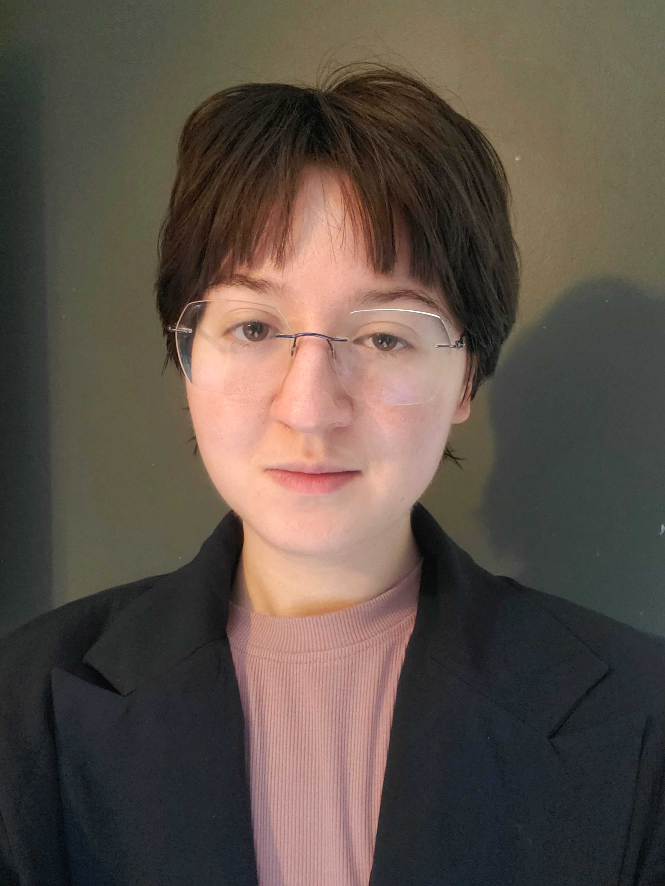

About the Team
We’re a team of graduating IT students who came together to build BAG (Budgeting Aid Guide) as our capstone project.
Our group combines strengths in back-end development, front-end design, database management, and visual design to create a complete and functional application.
Each team member contributed in a meaningful way—from building core features and structuring the database to designing the user interface
and shaping the overall look and feel of the platform. Throughout the project, we collaborated closely, adapted to challenges, and supported each other’s growth.
BAG represents more than just a class assignment—it reflects our technical skills, teamwork, and dedication to building something useful for real students.
As we graduate, we hope to continue improving and expanding the project beyond this course.

Joey Ackerman-Lowery
Programming Student
Joey is a Computer Programming student at Fayetteville Technical Community College and has already earned an associate degree in Cybersecurity.
She will graduate in May with additional associate degrees in Computer Programming and Cloud Management.
Her skills include Java, Python, database management, and application development.
For BAG, Joey developed the initial version of the financial tracking application, providing the foundation for the team’s work.
She focused on enhancing the Dashboard, Semesters, Transactions, and Funding sections by implementing edit and delete functionality
and improving how data is organized and displayed.
Joey's strengths include problem-solving, attention to detail, and ensuring smooth integration between front-end design and back-end functionality.
Joey's Github

Mattea Isley
Programming Student
Mattea is an Information Technology student at Fayetteville Technical Community College, originally from California, with a strong background in software
development and systems. She is completing degrees in Computer Programming and Development, and Cloud Management, with skills in Python, Java, C++, HTML,
Linux, cloud technologies, and networking.
For BAG, Mattea played a key role in developing and refining the profile and budgeting pages. She also created the app’s intro screens,
helping shape the user’s first experience. Beyond development, she organized and built the team’s GitHub Pages website,
ensuring the project was clearly presented and well-structured.
After transitioning to remote early in the process, she remained highly adaptable and collaborative. She continued to contribute
consistently from a distance and is especially grateful for the support and teamwork of her peers throughout the project.
Mattea's Github

Paul Gayle
Programming Student
Paul is a computer programming student with a strong focus on back-end development and API integration. He enjoys building the
logic and systems that power applications, with particular interest in database design, server-side functionality, and connecting services through APIs.
He works effectively in team environments and is known for going above and beyond to support his peers and contribute to overall team success.
He values collaboration, clear communication, and taking initiative when challenges arise.
Paul’s long-term goal is to pursue a career in software engineering, where he can continue developing scalable, efficient solutions while growing
as a developer and contributing to impactful projects.
Paul's Github

Lydia Loffert
Database Student
Loffert is a Database Management student at Fayetteville Technical Community College studying database programming and design.
She has skills in SQL, Python, C++, and HTML, with a strong focus in SQL. For BAG, Loffert contributed to the front-end design,
debugging, and oversight with the database structure. She oversaw the coordination between remote and physical members and helped
steer the team with Agile best practices. She demonstrated strong communication skills, ability to troubleshoot and flexibility
with the time-crunch.
Loffert's Github